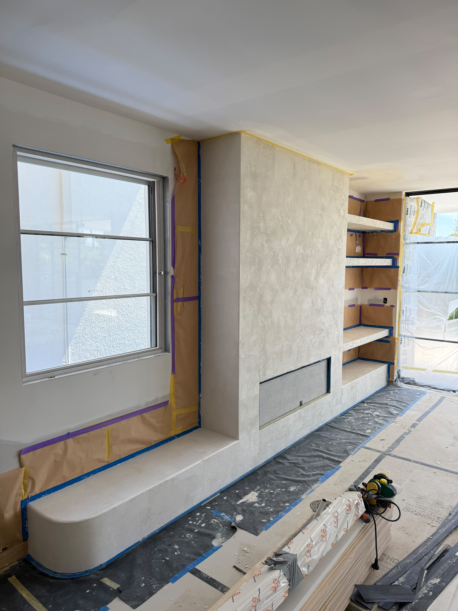
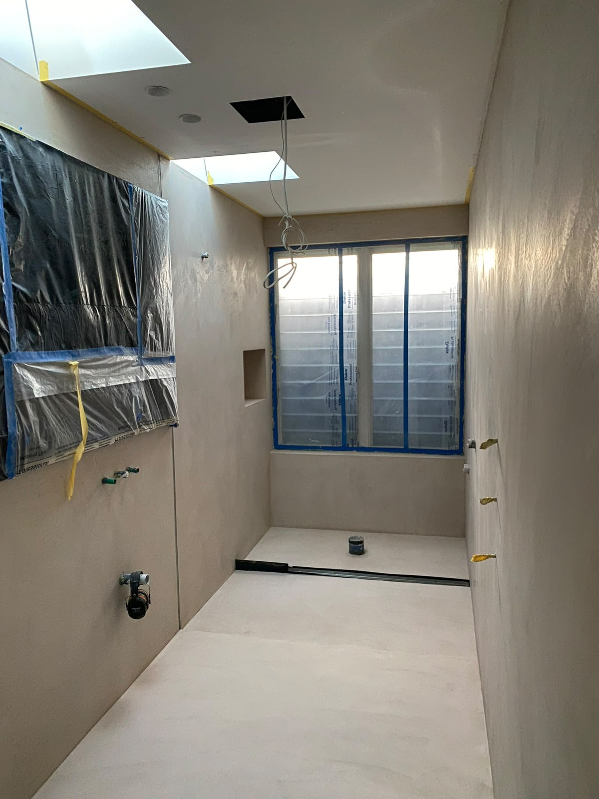

L'art du béton ciré
Nous réalisons des finitions haut de gamme en béton ciré pour les salles de bain, sols, murs, plafonds et autres éléments décoratifs. Nous utilisons exclusivement les produits AD LUCEM, référence française du béton ciré décoratif.
La réalisation est effectuée par des artisans qualifiés et nécessite une préparation très soignée du support afin d'obtenir un résultat propre, durable et avec une finition haut de gamme. Chaque couche est appliquée à la main, poncée, puis protégée — un processus exigeant qui ne tolère aucun raccourci.
Le béton ciré offre une surface continue, sans joint, qui confère aux espaces un caractère monolithique et contemporain. Mate ou satinée, la finition est choisie en fonction de l'usage et de l'ambiance souhaitée.
Découvrir les produits AD LUCEM →
Où appliquer le béton ciré
Sols et pièces de vie
Béton ciré au sol pour un rendu monolithique et contemporain. Surface lisse, sans joint, entretien facilité. Idéal pour les espaces de vie ouverts où la continuité visuelle entre les pièces crée une sensation d'ampleur.
Salles de bain
Application intégrale en béton ciré — sol, murs, receveur de douche. Étanchéité maîtrisée, finition minérale et douce au toucher. Un rendu haut de gamme incomparable qui transforme la salle de bain en un espace de bien-être.
Escaliers et éléments architecturaux
Habillage de marches, limons, garde-corps. Le béton ciré épouse les formes complexes et donne un aspect sculptural à l'ouvrage. Un résultat saisissant, notamment sur les escaliers hélicoïdaux avec éclairage encastré.
Murs et plafonds
Revêtement mural en béton ciré pour un effet de matière et de profondeur. Applicable sur placo, béton ou support préparé. Finition mate ou satinée selon l'ambiance souhaitée. Également adapté aux meubles intégrés et niches décoratives.
Nos réalisations en béton ciré
 Escalier
Escalier
 Salle de bain
Salle de bain

Salle d'eauPourquoi le béton ciré exige un savoir-faire
Préparation du support
Le support doit être parfaitement plan, sec et exempt de fissures. Un défaut en surface se verra dans le résultat final. Ragréage, ponçage, application d'un primaire d'accrochage — chaque étape est déterminante.
Application multicouche
Le béton ciré s'applique en plusieurs passes fines, à la taloche ou à la spatule. Chaque couche est poncée avant la suivante. Le geste de l'artisan conditionne la texture, la profondeur et l'homogénéité du rendu final.
Protection et durabilité
Un vernis de protection est appliqué en fin de processus pour assurer l'étanchéité et la résistance à l'usure. Dans les pièces humides, l'étanchéité est renforcée en amont. Résultat : un revêtement durable qui vieillit avec élégance.
Une finition qui fait
toute la différence
Premier rendez-vous sur site. Devis détaillé sous 10 jours, sans engagement.
Lundi – Vendredi : 7h – 18h · Samedi : 8h – 14h